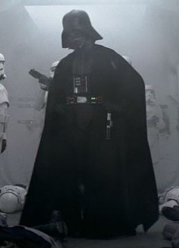

Forums galactiques > Taverne galactique : lieu de discussion informel > The Dark Side
Pages : 1 2
| Lord Worcester  27/05 ETU 17:21 | -Message to god- I believe that this game would be much better if it were translated into English. Furthermore it would attract a wider range of people playing as they would be from all over the world. Only then could this game benefit from the true power of the force. |
fregger 27/05 ETU 19:32 | Actually it would benefit from a translation in Cantonese, which is a much more widespread langage than English. It is not expansive at all and would enrich the relationships between China and Europe. Furthermore, I think a Swahili translation might open the Botswanese market, a country with endless possibilities since everybody is dying of AIDS. I should add that being written in Franch, this game is an insult to the other langages spoken in France : Alsacian, Corsican, Occitanian, Racaillian, Ch'tian... |
Kyo 27/05 ETU 20:13 | french* |
dieu 28/05 ETU 02:28 | Gods are listening to you and I think that's a really good idea but we have too much work to do before thinking about translating the game! 'hope you'll understand! But, if ya really want to do that try to speak with Macolu ;) Good proposal. |
Robespierre 28/05 ETU 09:19 | Ich glaube das hat kein Sinn, diese Spiele auf Englich übersetzen....die Americaner und die anderen Leuten die sprechen nur English, spielen schon immer... In der Tat, jedes Tages sie brauchen Strategie und Grausamkeit nur um zu überleben in ihren wirkliche "Geselschaft" ! Wirtchaftkriege muss für uns ein spiele bleiben ! |
gégé 28/05 ETU 10:44 | Я требую перевод в serbo-Croat E, por que não uma tradução no grego? Tief betrübt komme ich heraus... |
gégé28/05 ETU 10:45 | Ach Scheiße! Russisch geht nicht über ^^. |
skull 28/05 ETU 11:33 | Isto é uma boa ideia! Em portugês!!!! |
primarque 28/05 ETU 12:44 | Euh..... et si j'abandonné l'idée de passer en L ????? |
galfanec28/05 ETU 13:29 | ГЁжШц ЖкМЭхуС ёДГза |
Redsamourai 28/05 ETU 18:04 | eh bé |
Nanovitch 28/05 ETU 18:54 | Tiens on pourrait se la jouer en esperanto. |
karctak 28/05 ETU 21:35 | Eu.... y'a beaucoup de pays différents sur ce site je suis loin d'être polyglote lol |
Kyo28/05 ETU 23:39 | здрacтвyйте , меня зaвyт pемй я также говорю по русскому языку. но я не понимаю много когда кто-то говоря , но я понимаю лучше грамматику |
Kyo28/05 ETU 23:39 | erf , ça n'affiche pas les caractere russe ... |
Abanon 29/05 ETU 15:44 | habla espanol ? |
Pikaïa 29/05 ETU 16:53 | irie mon |
Karibou Imperator 01/06 ETU 21:59 | Is my tailor Rich? |
Necrid 02/06 ETU 10:34 | et en latin ? Vous osez oublier le latin !!! |
fennecq 02/06 ETU 16:46 | hey worcester!!! don't forget you're only HALF-rosbif! french games have to keep their originality, so now go to ur pub, have 10 pints n a half-pounder with cheese n think: france is such a fantastic country... (I found some john smith at home...) |
Pages : 1 2
Forums galactiques > Taverne galactique : lieu de discussion informel > The Dark Side